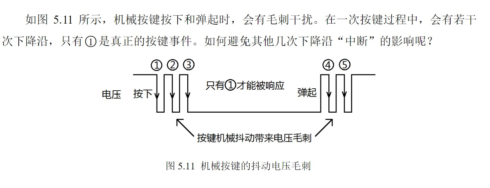

msp430g2之IO外部中断
同样云端ccs开发，结合g2手册和指导书食用
用的是P1_3 push2 的外部中断

g2有P1P2两列外部IO中断,需要用PXIE对IO中断使能，IES设置上下边沿触发，REN设置上拉下拉
&= ~是置0，进入中断之后，中断标志位会自动置1，需要PXIFG=0手动清成0.（有的会做成硬件清0，但是如果懒得查它到底自动不自动，还是直接软件清零吧）
中断向量是vector=PORT1_VECTOR
#include <msp430.h>
int main(void)
{
WDTCTL = WDTPW + WDTHOLD; // Stop watchdog timer
P1DIR |= BIT0; // Set P1.0 to output direction
P1IE |= BIT3; // P1.3 interrupt enabled
P1IES |= BIT3; // P1.3 Hi/lo edge
P1REN |= BIT3; // Enable Pull Up on SW2 (P1.3)
P1IFG &= ~BIT3; // P1.3 IFG cleared
//BIT3 on Port 1 can be used as Switch2
__bis_SR_register(LPM4_bits + GIE); // Enter LPM4 w/interrupt
//把SR寄存器的GIE位置位，也可以用_enable_interrupts(); 即总中断使能
//LPM4是low power node4 直接进入低功耗模式，会被中断唤醒然后接着睡
}
/*
// Port 1 interrupt service routine
#if defined(__TI_COMPILER_VERSION__) || defined(__IAR_SYSTEMS_ICC__)
#pragma vector=PORT1_VECTOR//这个是给中断向量表进行赋值的
__interrupt void Port_1(void)//关键字__interrupt则表示这个函数是中断服务函数这种特殊函数。
#elif defined(__GNUC__) //这玩意是gcc主版本号，安装gcc了都能过预编译
void __attribute__ ((interrupt(PORT1_VECTOR))) Port_1 (void)//GNU C 的一大特色就是__attribute__ 机制。attribute 可以设置函数属性（Function Attribute）、变量属性（Variable Attribute）和类型属性（Type Attribute）。这里是设置Port_1函数为PORT1_VECTOR的中断向量
#else
#error Compiler not supported!
#endif
{
P1OUT ^= BIT0; // P1.0 = toggle
P1IFG &= ~BIT3; // P1.3 IFG cleared
}
*/
//其实大家可以不用这么写,这么写就行。
#pragma vector=PORT1_VECTOR
__interrupt void Port_1(void)
{
P1OUT ^= BIT0; // P1.0 = toggle
P1IFG &= ~BIT3; // P1.3 IFG cleared
}

P1八个IO共用这一个中断，如果想要辨别是哪个端口出的低电平，就用IFG来判断，IFG进入中断就硬件置1了。
用((P1IN&Push_Key)==0) 来确保此刻是按下的，即P1那个导致进入中断的端口还处于低电平还没有恢复原状。
voidP1_IODect()
{
unsigned int Push_Key=0;
Push_Key=P1IFG&(~P1DIR);//代码1：检测所有输入IO，确保只有1个IO中断被“记录”
//----延时一段时间，避开机械抖动区域------
__delay_cycles(10000);//代码2：消灭下降沿2、3、5
//----判断按键状态是否与延时前一致------
if((P1IN&Push_Key)==0) //代码3：专门消灭下降沿4
{//----判断具体哪个IO被按下，调用该IO的事件处理函数
switch(Push_Key)//代码4：不用P1IN来判断，以确保有且只有1按键响应
{
case BIT0: P10_Onclick();break;
case BIT1: P11_Onclick();break;
case BIT2: P12_Onclick();break;
case BIT3: P13_Onclick();break;
case BIT4: P14_Onclick();break;
case BIT5: P15_Onclick();break;
case BIT6: P16_Onclick();break;
case BIT7: P17_Onclick();break;
default:break;
}
}
P1x_Onclick()自己定义。
版权声明：本博客所有文章除特殊声明外，均采用 CC BY-NC 4.0 许可协议。转载请注明出处 做秧歌star的女人